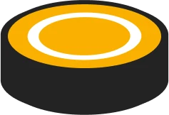
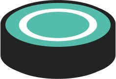
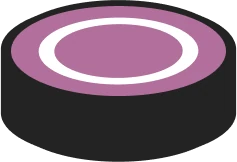
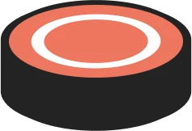

As notas descem pelas 4 pistas no ritmo do forró. Quando a nota chegar no botão, aperte a tecla da pista.toque no botão da pista.

D
F
J
KNota com rastro: segure até o rastro acabar pra ganhar pontos extras.
Não erre! Acertos em sequência sobem o multiplicador até x4 e soltam as tags: